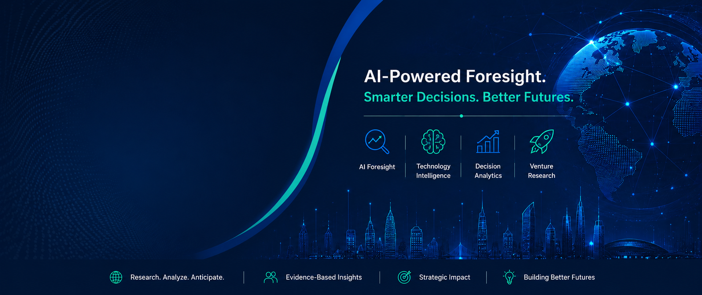

About
Forenture connects artificial intelligence, analytics, and information systems to study emerging technologies and support decision-making. The lab’s work includes text analytics, topic modeling, expert-informed machine learning, reinforcement learning, and technology intelligence methods.
Join our LinkedIn Group: AI Foresight & Venture NetworkFigure. Visualization of AI-related research themes across Entrepreneurship, Information Systems, and Technology Management (ASAC 2026 Conference).
Research Areas
Technology Scanning & Foresight
AI-assisted methods for identifying, mapping, and interpreting emerging technology trends.
AI & Text Analytics
NLP, topic modeling, clustering, and similarity-based mapping for large research corpora.
Prescriptive Analytics
Decision models, optimization, simulation, and analytics for managerial decision support.
Information Systems
Research and at the intersection of digital systems, business analytics, and innovation.
Projects
Technology Review Repository
Open research materials, data, and reproducibility resources for technology scanning studies.
AI Topic Modeling
Experiments combining expert input, topic modeling, and adaptive learning methods.
How the AI Assistant Works
Choose a tab to explore the workflow for users, advisors, and administrators.
From a conversation to a clearer decision
The conversation is the discussion. The topic model is a structured interpretation that people can inspect and correct. A synthesis is a separate model derived from selected, authorized sources.
- 01 · DISCUSS Explore one problem within a topic.
- 02 · STRUCTURE Build a draft model linked to source messages.
- 03 · REVIEW Confirm, correct, and save a model version.
- 04 · COMPARE Compare authorized models and develop a separate synthesis.
What a topic model contains
- Decision question and context.
- Goals, constraints, and priorities.
- Options and comparison criteria.
- Assumptions and evidence references.
- Information gaps and unresolved questions.
- Review status and model versions.
People remain in control
AI suggestions begin as drafts. Users confirm their circumstances and preferences. Advisors contribute feedback within their assigned access.
Important interpretations should remain open to correction, explanation, and review.
An AI-generated statement is not automatically a fact.
User-reported information is not independent verification.
A preference score is not a probability of success.
User guide
Explore one problem at a time and help the model reflect your actual situation.
Describe your problem
Explain your situation, the decision you face, and the outcome you want.
Example: Should we launch now or run a paid pilot?
Clarify what matters
Answer focused questions about goals, constraints, priorities, timing, and missing context.
Confirm currencies, dates, and important definitions.
Explore your options
Review suggested actions and comparison criteria. Add, revise, or reject items that do not fit.
An AI proposal is not automatically your preference.
Check the draft model
Inspect assumptions, evidence references, and information gaps. Correct misinterpretations.
Distinguish user reports, AI suggestions, and external evidence.
Compare trade-offs
Examine benefits, risks, uncertainty, and assigned-advisor input when available.
Inspect criteria and assumptions—not just the final ranking.
Review and refine
Test scenarios, review feedback, and save an updated model version as your situation develops.
Hypothetical changes should not silently replace your current circumstances.
Before continuing
- Use separate topics for unrelated decisions.
- Confirm important model items.
- Avoid passwords and unnecessary sensitive details.
- Review sharing permissions before cross-user synthesis.
Expected outputs when implemented
- A conversation connected to one topic.
- A source-linked topic-model draft.
- A user-reviewed model version.
- Unresolved questions and possible next actions.
Advisor guide
Compare cases without erasing individual context or expanding your access.
Select authorized topics
Choose topics and model versions available within your assigned access.
Advisor status alone should not reveal every user.
Review sources and status
Inspect source messages, evidence links, user confirmations, and unresolved questions.
Interpretation review is not independent factual verification.
Check comparability
Align decision context, criteria, units, assessment scales, and time horizons.
Similar terminology does not establish equivalent circumstances.
Compare side by side
Identify shared patterns, contextual differences, conflicting assumptions, and evidence gaps.
Do not average incompatible scores or hide disagreement.
Create a separate synthesis
Select authorized elements and record source topics, versions, mappings, and reasons for inclusion.
Preserve original users’ models unchanged.
Return reviewed feedback
Explain limitations, invite corrections, and share only with the approved audience.
Derived outputs must not reveal unauthorized details.
Expected outputs when implemented
- Topic-specific review and comments.
- A comparability matrix.
- A separate synthesis model.
- Source references and review history.
Preserve differences
Keep conflicting assumptions, priorities, and circumstances visible.
A pattern across selected cases does not automatically apply to each individual.
Administrator guide
Keep identity management, participant eligibility, advisor assignments, and access to private content separate.
Manage identities and roles
Designate privileged accounts through a protected administrative process.
Ordinary registration must not grant administrator access.
Configure access scopes
Manage participant eligibility, advisor assignments, and explicit sharing permissions.
Hiding a menu item is not backend authorization.
Maintain context templates
Version criterion definitions, units, required questions, and assessment scales.
Template updates must not silently rewrite old models.
Monitor model operations
Track extraction errors, validation, source-link quality, reviews, and usage costs.
A correctly formatted AI response can still be wrong.
Manage contact requests
Use the planned private Inbox to review inquiries and monitor notification status.
Saving a request and delivering an email are separate outcomes.
Maintain and audit
Review privileged access, record changes, test recovery, and apply retention policies.
Retention and deletion must consider derived models too.
Planned contact-request workflow
- 01 · VALIDATE Check the public inquiry.
- 02 · SAVE Store the request and pending notification.
- 03 · INBOX Display the request to authorized administrators.
- 04 · NOTIFY Process the email notification separately.
Email failure must not erase the stored request.
Provider acceptance does not guarantee inbox delivery.
This guide does not implement the Inbox or email worker.
- Keep privileged keys and email secrets off the browser.
- Protect public submissions against spam and abuse.
- Test access using separate accounts for each role.
- Verify features before presenting them as available.
Proposed access rules
Permissions must apply to records, searches, exports, and derived outputs—not just navigation links.
| Resource or action | User | Advisor | Administrator |
|---|---|---|---|
| Topics and models | Own records and proposed edits. | Assigned or explicitly shared records. | Separately granted, justified content access. |
| Confirm preferences | Confirm their own interpretation. | Recommend changes; do not impersonate confirmation. | Do not substitute admin authority for confirmation. |
| Cross-user synthesis | Approved shared outputs only. | Authorized sources and purpose only. | Manage policy; no unrestricted synthesis by role alone. |
| Roles and assignments | Cannot self-assign privileged roles. | Cannot expand their own access. | Manage through a protected process. |
| Contact-request Inbox | No listing of other people’s requests. | No access by default. | Designated Inbox administrators only. |
Selecting a role tab displays instructions only.
It does not grant account privileges.
All visitors can read these guide sections.
- Enforce permissions in the backend.
- Scope semantic search to authorized records.
- Review consent and purpose before cross-user processing.
- Protect summaries, embeddings, exports, and synthesis outputs.
Questions and important boundaries
Open a question to read its explanation.
Does the AI make the final decision?
No. The proposed workflow organizes options, evidence, uncertainty, and trade-offs. Users retain judgment and may seek suitable professional advice for consequential decisions.
Can advisors see every conversation?
Not under this proposed policy. Access should be restricted by assignments and explicit sharing rules. Check the implemented policy before entering confidential information.
Does similarity allow topics to be merged?
No. Similarity may identify comparison candidates. Permission and compatibility must be checked before creating a separate synthesis.
What if the model gets something wrong?
Flag the item, inspect its source, and propose a correction. Save a reviewed version rather than silently rewriting history.
What does a score of 75 out of 100 mean?
Only what the defined scoring method says. It is not a 75% chance of success. Criteria, scales, weights, and assumptions should be visible.
Does this guide connect to Supabase?
No. This component displays instructions and switches tabs. It does not sign users in, change roles, save models, or send email.
Are all described features available now?
No. Topic-model extraction, versioning, cross-user synthesis, and the private contact Inbox are planned until implemented and tested.